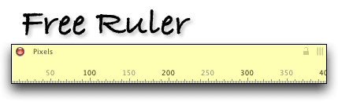

|

Free Ruler is a free screen ruler for Mac OS X.
Current Version:
Free Ruler Version 1.0, released February 13, 2002.
©2002 by Pascal. Free Ruler is, uh, free.
Features:
• A horizontal and vertical ruler which can be used independently or together.
• Rulers can be grabbed and moved around the screen.
• Rulers can be nudged around using the arrow keys.
• A crosshair cursor helps in measuring objects on screen.
• Mouse location appears on the ruler for more precise measurement.
• Rulers can be resized independently, from 120 pixels to 2000 pixels in length.
• Horizontal and vertical rulers can be grouped and moved as a unit.
• Did I mention it's free?
Download:
Download Free Ruler for Mac OS X (776 Kb).
Note: Free Ruler is only available for Mac OS X. It may work on Mac OS 9, but this has not been tested. It most definitely will not work on your stupid Windows PC.
Known Problems:
• The crosshair cursor does not turn into an arrow when the mouse enters the menu bar.
• If both rulers are open and one is obscured by another application window, closing the frontmost ruler does not bring the other ruler forward.
• The ruler redraws a little slowly when dragging the resize handle (at least on my 500 Mhz iBook.)
• Rulers must be brought forward before they can be moved around the screen or closed.
Possible Features for Possible Future Releases:
• Saving ruler locations and other settings out to a preferences file.
• The ability to measure in units other than pixels, if someone can provide me with a good argument as to why this might be useful.
• A ground-up rewrite in Cocoa.
• Transparency.
Feedback:
Free Ruler is free software, which means I don't provide technical support for it. I make no promises about future releases. However, I welcome your feedback at pascal@pascal.com?subject=Free%20Ruler.
Free Ruler was made with REALbasic.
|